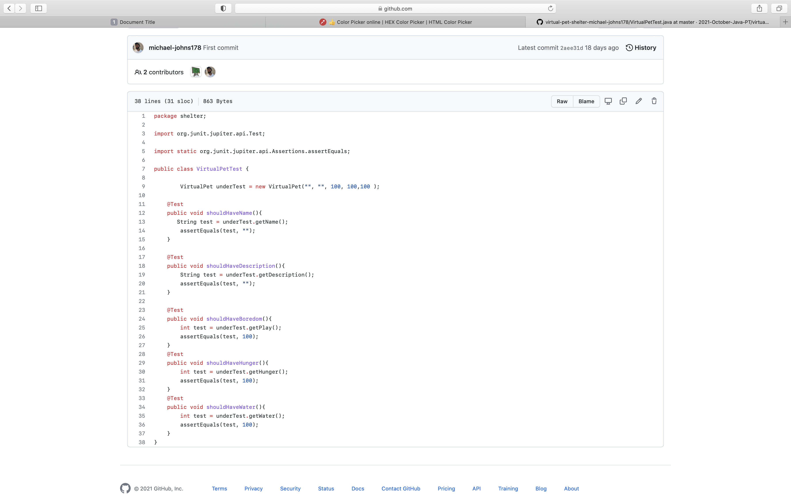
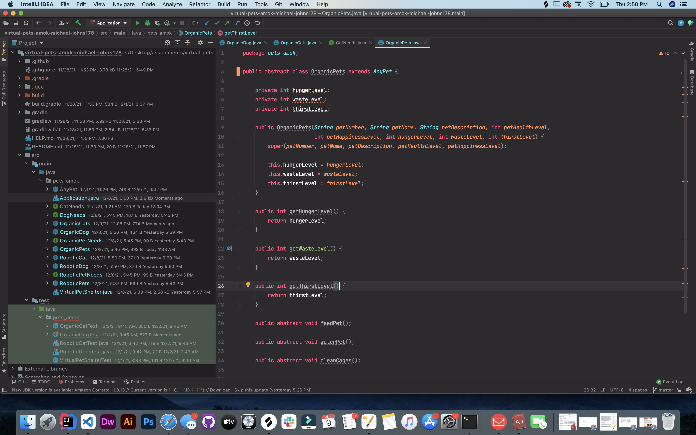
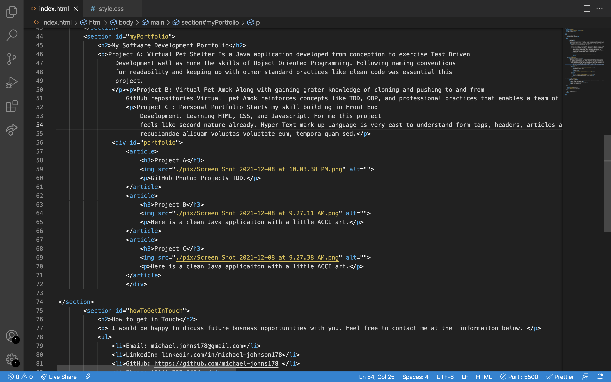

About Me
Michael Johnson is a Software Developer as well as life long creative. My whole life I’ve drawn, painted, and composed music. The past three years I’ve built and designed furniture. Software Development implemention is a new and exciting way for me to bring creations to life. I have strong business acumen and have built interpersonal skill over the last five years.
I study and choose my projects carefully to test my abilities. After long hours of research I make sure my projects will involve the implementation of a skill that’s new to me but is a signature technique of an elite professional in the field.
The dexterity of being a Software Developer is what I enjoy the most. I’m constantly pushing myself to learn new things. Books, audio books, and subscriptions like Udemy are wells I draw from daily. The drive to grow and inspire. other to grow is deeply written in the code of my personality.
I have an extensive background working in the government and in the private sector. Previous employers include JP Morgan Chase and Franklin County Job and Family Services. While at JP Morgan Chase I quickly was promoted to an Elite / Business Card Specialist. At Franklin County Job and Family Services I once convinced the Ohio director of the ODJFS to reshape the County’s method of client intake, applications, and how we secured client data.
My Software Development Portfolio
Project A: Virtual Pet Amok Along with gaining grater knowledge of cloning and pushing to and from GitHub repositories Virtual pet Amok reinforces concepts like TDD, OOP, and professional practices that enables a team of Developers to work together as well as introducing Super Classes. This project really shows what can be built with OOP, from various types of characters with parent attributes to even more variant children that interact different under specific conditions.
Project B: Virtual Pet Shelter Is a Java application developed from conception to exercise Test Driven Development well as hone the skills of Object Oriented Programming. Following naming conventions for readability and keeping up with other standard practices like clean code was essential this project.
Project C : Personal Portfolio is the Front End Development. This will be a growing HTML, CSS, and Javascript page as time goes on this page will change.
Project A
GitHub Photo: TDD.
Project B
Intellaj Photo: Super Classes.
Project C
Vistual Stuido: A look at some.
How to get in Touch
I would be happy to dicuss future business opportunities with you. Feel free to contact me at the informaiton below.